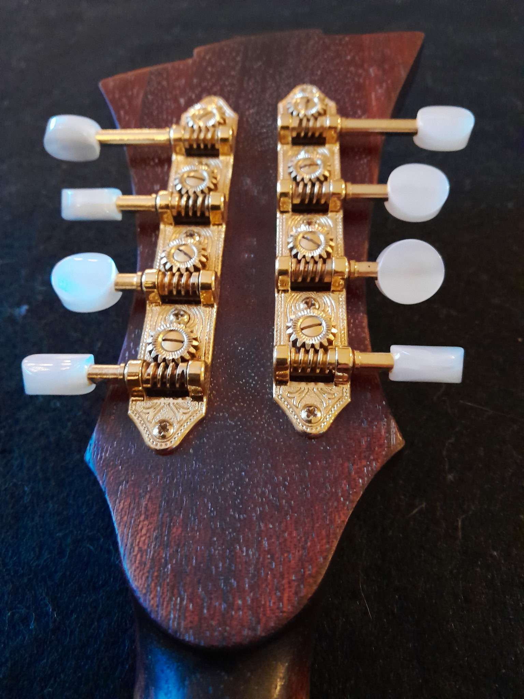
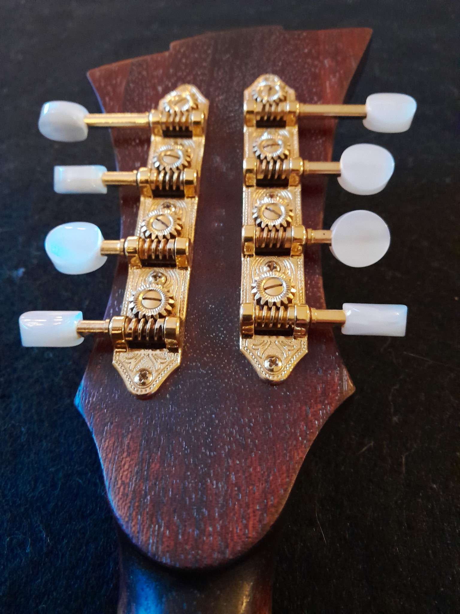

Custom builds
One-off guitars, mandolins, and lap steels voiced for your repertoire with tapped tops, hand-carved plates, and curated tonewood sets.
- Tap-tuned tops & bracing
- Premium tonewood library
- Hand-rubbed finishes
Custom builds & restoration
From new mandolins and archtops to restorative neck resets and bespoke inlay work, every instrument receives full documentation and hands-on voicing.
What I craft + restore
One-off guitars, mandolins, and lap steels voiced for your repertoire with tapped tops, hand-carved plates, and curated tonewood sets.
Neck resets, crack repair, refrets, and structural stabilization for vintage pieces needing a second life on stage.
Dialed-in action, electronics, and ergonomic adjustments so each instrument responds effortlessly to your touch.
Custom inlay & detail work
From fretboards to headstocks, I collaborate on motifs, materials, and proportions—balancing hand-cut artistry with modern stability techniques.


FAQ
Mother-of-pearl, abalone, exotic woods, and custom composites are all hand-cut and sealed for longevity.
New commissions vary 4–8 months depending on complexity; restoration timelines are quoted after evaluation.
Every repair and build includes a one-year warranty covering workmanship and setup support.
Detailed progress photos, video updates, and insured shipping make it simple to collaborate across borders.
Featured build


 

Ready when you are